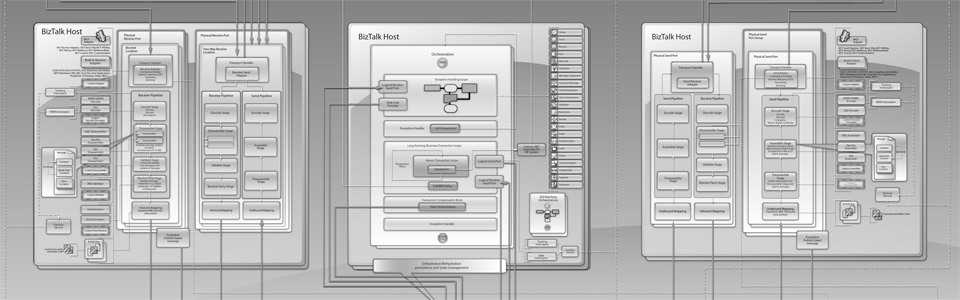

Geschäftsprozess-Integration und Automation
Kaum ein anderes Thema hat die Entwicklung von Unternehmens-Software in den letzten Jahren so dominiert wie Software-Integration und Automation. Wir entwickeln zukunftsweisende Lösungen auf Basis von Anwendungsservern wie Microsoft Biztalk und Microsoft SharePoint 2010 – übrigens nicht nur für große Unternehmen. Gerade auch kleine und mittelgroße Unternehmen profitieren von den neuen Möglichkeiten, Geschäftsprozesse mit Kunden und Partnerunternehmen zu
synchronisieren und eigene Geschäftsabläufe mit Hilfe von elektronischen Formularen und Workflows zu automatisieren.

Aktuelle Lösungen für die unternehmensübergreifende Geschäftsprozessintegration besitzen aufgrund der umfangreichen Aufgabenstellungen meist eine sehr hohe Komplexität. Diese Komplexität tritt schon bei der Entwicklung der zugrunde liegenden Anwendungssysteme zu Tage, z. B. bei der Modellierung von verteilten Geschäftsprozessen, bei der Definition von Transformationsregeln oder bei der Überwachung der Prozesse. Northstream Deutschland hilft Ihnen bei der Geschäftsprozessintegration und entwickelt Arbeitsumgebungen, mit denen Teams eine Vielzahl von Informationsquellen parallel analysieren und aufgrund dieser Informationen optimale Lösungen erarbeiten können.
Hosted Business Process Integration (H-BPI)
Die Integration von Geschäftsprozessen war in der Vergangenheit mit hohem personellen Aufwand und insbesondere auch mit hohen Kosten und Risiken verbunden. Die Kosten für die Unternehmen sind dabei umso höher, je mehr externe Geschäftspartner integriert werden müssen und je komplexer und je weniger etabliert die verwendeten Standards sind. Die Lösung für dieses Problem sind unsere Hosted Business Integration (xBPI) Services. mehr ...
Software Entwicklung
"Cutting Edge" ist für uns nicht nur ein Begriff aus dem Marketing. Viele unserer Projekte bewegen sich häufig an der Grenze heute erprobter und machbarer Verfahren, oder gehen darüber hinaus. Die Software-Entwicklung im Hochtechnologie-Bereich verlangt neben qualifizierten Mitarbeitern auch die Zusammenarbeit mit Hochschulen und Universitäten, sowie Forschungseinrichtungen, wie das Fraunhofer-Institut. In allen Projekten werden neue Erkenntnisse für softwaretechische Fragestellungen gefunden. Damit diese nicht verloren gehen, werden sie in unser hausinternes wissensbasiertes System mit mehreren zehntausend Lösungsansätzen und Algorithmen eingestellt. Für unsere Kunden bedeutet das höhere Software-Qualität in kürzerer Entwicklungszeit.
Die Automobilbranche gehört ebenso zu unseren Kunden wie viele namhafte mittelständische Unternehmen und öffentliche Auftraggeber. Sie alle Vertrauen unserer Fähigkeit IT-Trends zu evaluieren und neueste Software-Technologien zu planen und zu entwickeln.
Northstream Deutschland beschäftigt nur hochqualifizierte Software-Entwickler. Ständige Weiterbildung der Mitarbeiter und die Anwendung modernster Code-Pattern und Entwicklungstechnologien sind obligatorisch. Entscheidend ist für uns die Zufriedenheit des Kunden und seiner Mitarbeiter.
Unsere Kunden erwarten High-End Lösungen. So entwickeln wir im Auftrag unserer Kunden beispielsweise sicherheitskritische Anwendungen zur Muster- oder Gesichtserkennung auf mobilen Endgeräten. Anwendungen aus dem Bereich der Bioinformatik gehören ebenso zum Spektrum unserer Möglichkeiten wie auch individuelle Cloud Computing Lösungen oder Location-Aware Anwendungen.
IT Projektmanagement
Wie oft in den letzten Jahren haben Sie in Ihrem Unternehmen, Ihrer Organisation oder Verwaltung erlebt, dass Software-Projekte die ursprünglich veranschlagten Budget- oder Zeitgrenzen nicht eingehalten haben. Eine nicht geringe Anzahl an Vorhaben scheitern mithin auch ganz. Die Ursachen sind vielfältig, jedoch spielt meist Überforderung und mangelhaftes Projektmanagement die entscheidende Rolle.
Wir verfügen über eine große Erfahrung im Management von mittelgroßen und großen IT-Projekten. Unsere erfahrenen Projektmanager führen das Vorhaben zielsicher durch alle Phasen des Projekts. Häufig werden wir auch zu Projekten gerufen, die zu scheitern drohen. Auch stark gefährdete Vorhaben lassen sich durch energisches Eingreifen meist retten. Fragen Sie uns!
Studien und Forschung
Northstream Deutschland beteiligt sich regelmäßig an IT bezogenen Forschungsprojekten, häufig im Rahmen von EU bzw. staatlich geförderten Forschungsprogrammen. In der Regel arbeiten wir im Rahmen dieser Programme eng mit Universitäten oder anderen Forschungseinrichtungen zusammen. So entwickeln wir in diesen Projekten beispielsweise Software für drahtlose Sensornetzwerke (WSN, Wireless Sensor Networks).
Schließlich erstellen wir im Auftrag unserer Kunden Studien wie Risikoanalysen oder Machbarkeitsstudien. Gerne informieren wir Sie ausführlicher.
IT-Technology Evaluation
Software-Entwicklung ist früher wie heute ein komplexer Vorgang. Heute ist es allerdings für das Projektmanagement infolge wesentlich höherer Dynamik schwieriger, Trends und Entwicklungen abzuschätzen. Dies ist umso wichtiger, weil Fehlinvestitionen hohe Verluste verursachen oder sogar die Existenz eines Unternehmens gefährden können. Um dieser Problematik zu begegnen, haben wir in unserem Research Center die Technology Evaluation Group (TEG) gegründet. Sie soll uns und unseren Kunden helfen wichtige und zukunftsfähige Trends zu erkennen. Gerne können Sie diese Dienstleistung acuh für ihr Unternehmen oder ihre Organisation nutzen.
Open Source
Northstream Deutschland unterstützt die Open Source Idee sowohl finanziell, wie auch mit Entwicklungskapazitäten. Wir ermutigen unsere Mitarbeiter sich an Open Source Projekten zu beteiligen, bzw. eigene Open Source Projekte ins Leben zu rufen. Ein Projekt, welches von einigen unserer Mitarbeiter gegründet und kontinuierlich weiterentwickelt wird, ist die Programmbibliothek Geoutility Library (s. u.).
Wir sind der Überzeugung, dass beide Paradigmen, Open und Closed Source, ihre Berechtigung haben. Es gilt die Vor- und Nachteile beider Ansätze zu evaluieren, eine ideologische Festlegung auf ein Paradigma ist sollte auf jeden Fall vermieden werden. Die Erfahrung einiger Unternehmen sowie öffentlicher Verwaltungen, die einseitig auf Open Source Lösungen setzten und scheiterten (z. B. das Bumdesministerium des Äußeren der Bundesrepublik Deutschland) sind ebenso falsch wie das einseitige Beharren auf Closed Source Produkte, weil dadurch einige Einsparpotentiale vergeben werden.
Northstream Deutschland unterstützt in unterschiedlicher Form Open Source Projekte als Administratoren, Projektmanager, Software-Entwickler oder mit finanziellen Mitteln. Unter anderem werden die bekannten OS-Projekte Glassfish Server (JavaEE basierter Anwendungsserver), Apache Maven (Management Tool für Software-Projekte) oder NuGet (Package Management System für die Entwicklung) von uns unterstützt.
Geoutility Library
Eines unserer populärsten Open Source Projekte ist die Programmbibliothek Geoutility Library. Sie wird auf der bekannten OS-Plattform Codeplex (http://geoutility.codeplex.com) gehostet. Sie hat bereits mehr als 200.000 Downloads zu verzeichnen, und belegt aktuell einen Rang in den TOP20 der Download-Statistik.
Die Programmbibliothek verarbeitet Satellitendaten und Satellitenbilder bzw. Luftbilder verschiedener Anbieter, führt Berechnungen mit diesen Daten aus und stellt Beziehungen zu geographischen Koordinaten her. Die Bibliothek wurde ursprünglich im Rahmen eines Forschungsprojekts im Auftrag des Fraunhofer Instituts entwickelt. Auf dem Markt war kein Produkt erhältlich und damit entschlossen wir uns zur Eigenentwicklung. Im Jahr 2009 wurde die Bibliothek als Teil des Gesamtprojekts in eine Open Source Lizenz überführt und veröffentlicht. Wir verwenden die Bibliothek selbst in einigen weiteren Entwicklungsprojekten. Damit ist sichergestellt, dass neuere Entwicklungen ständig in die Evolution einfließen und auch die Open Source Gemeinde weiterhin davon profitieren kann.
Die Geoutility Library ist auf Windows, Linux und Apple Rechnern, sowie den meisten Smartphones lauffähig. Sie können auf der Codeplex-Website eine kleine Testanwendung oder die Bibliothek herunterladen. Bitte beachten Sie die Lizenzbedingungen.
Kurzmitteilungen

Sicherheitskritische Anwendung für Smartphones und Mobile Devices
Northstream entwickelt neuartige sicherheitskritische Gesichtserkennungsanwendung für Smartphones..

Rekordumsatz im 4. Quartal 2012
Northstream Deutschland hat das 4. Quartal 2012 erneut mit einem neuen Konzern-Rekordumsatz und Gewinn abgeschlossen.

Volkswagen vergibt Forschungsauftrag
Der Volkswagen-Konzern in Wolfsburg hat eine Machbarkeitsstudie für ein Geo-Tracking Verfahren in Auftrag gegeben.
Get In Touch
News & Press Information Service
Job offers & Recruitment
Senior Technical Lead